ASAMBLEA
Fundada por Mariano Hortiguela @marianohortiguelaaguado
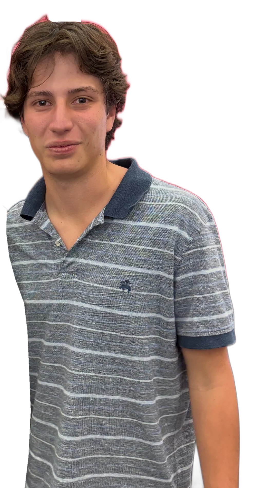
Mariano Hortiguela / Fundador y editor
Poco tiempo.
Mucho contexto.
Noticias de México y el mundo en formatos breves. Para entender una noticia sin tener que dominar sus términos técnicos.
La prioridad: contexto, datos y un lenguaje claro.
Reviso.
La información disponible, en varias fuentes, hasta el detalle.
Ordeno.
Antecedentes, contexto y presente, nivel por nivel, para ver de dónde viene el tema.
Distingo.
Lo que falta por confirmar. Y lo digo así en cada pieza.
Antes del titular, entender la historia.
Así se ve
el contexto.
Una selección de publicaciones reales de ASAMBLEA. Cada pieza, con su fuente y su fecha.
Ver ASAMBLEA en InstagramArchivo del 20 al 22 de octubre de 2026. Toca una publicación para leer la pieza completa.
Las conversaciones
también están afuera.
Salas, plazas, foros.
Una mirada al recorrido de Mariano, más allá de la pantalla.
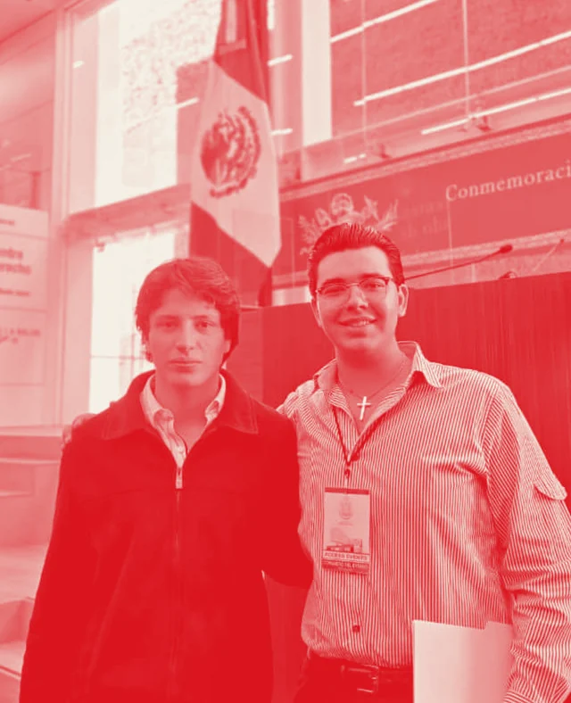
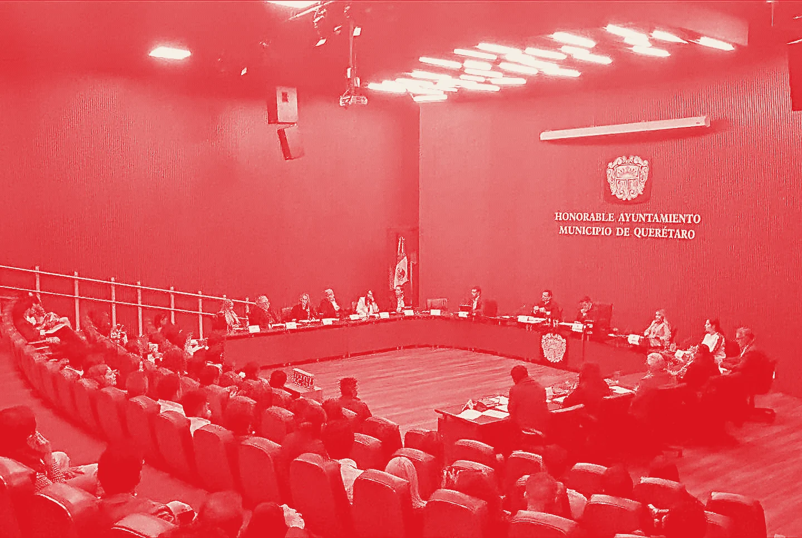
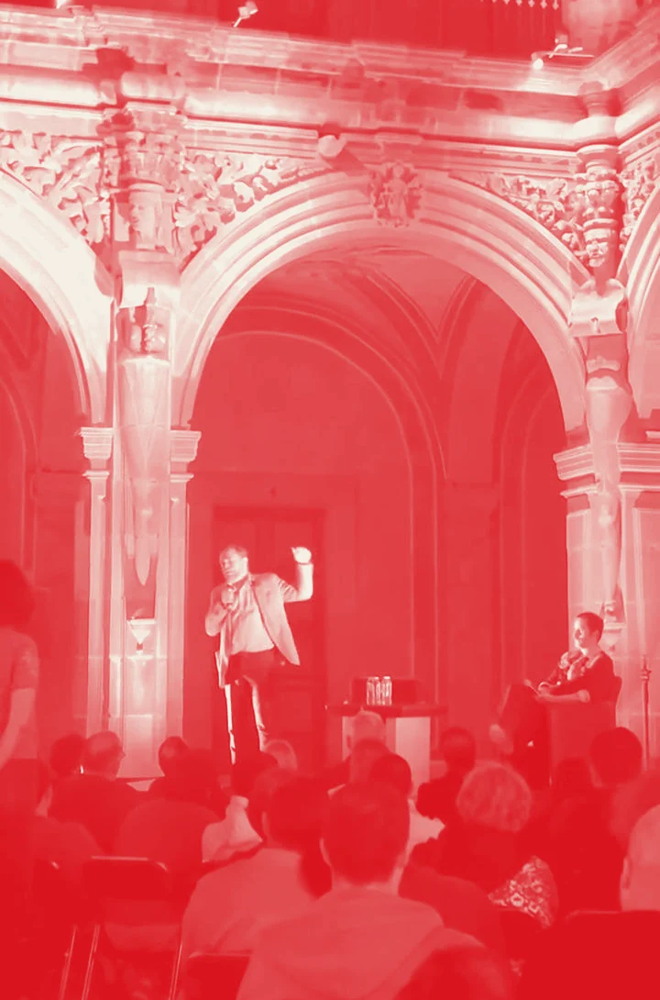
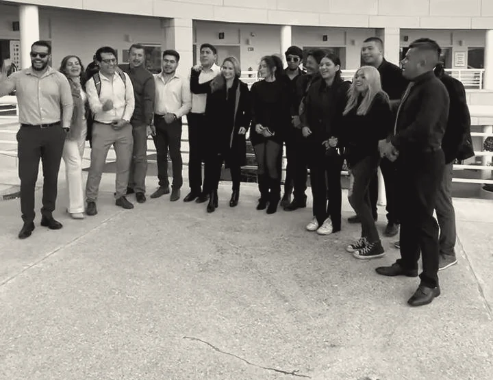
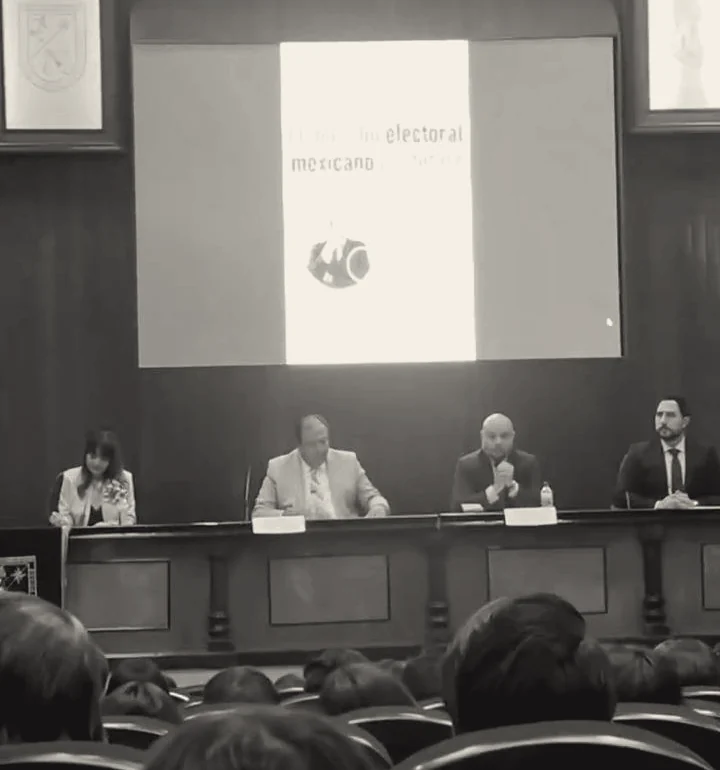
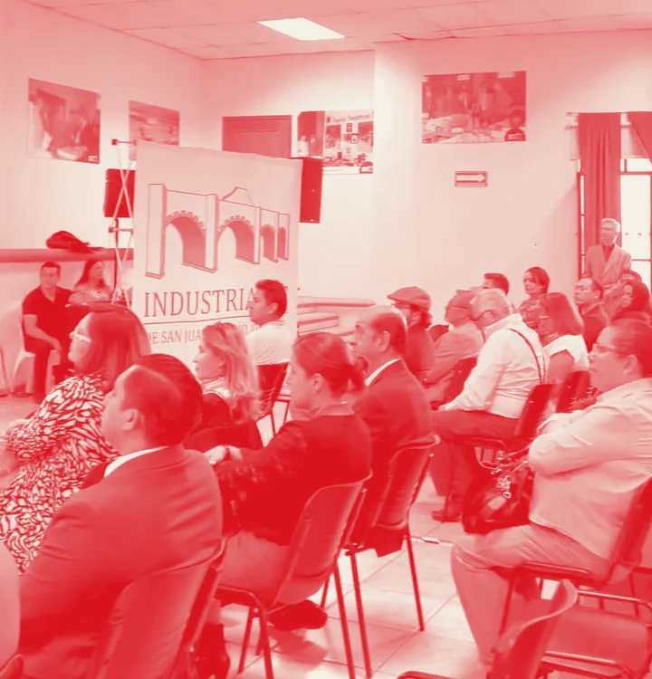
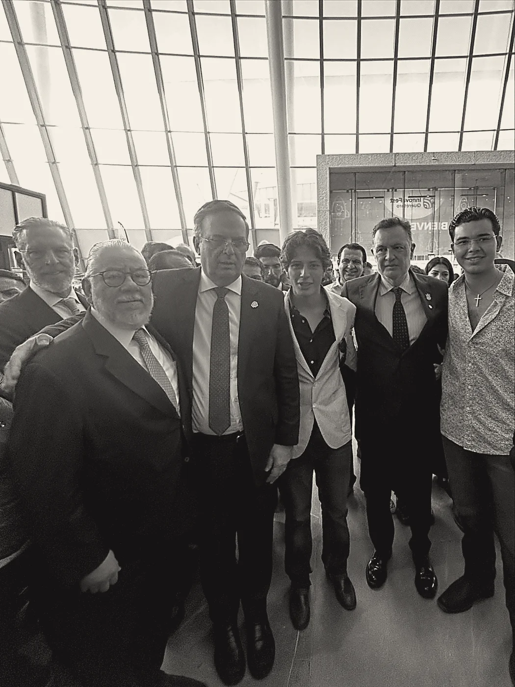
APUNTES DEL CAMINO · ARCHIVO FOTOGRÁFICO PERSONAL
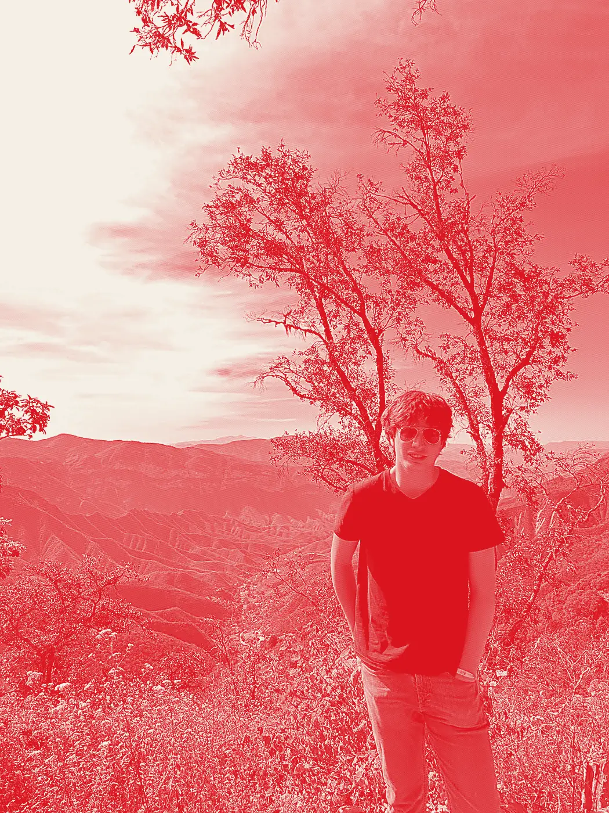
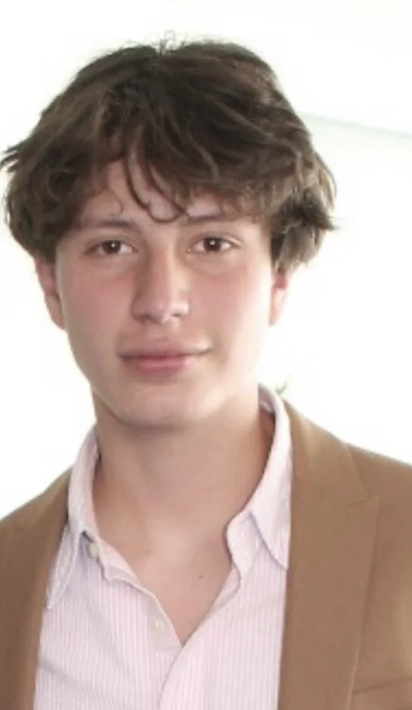
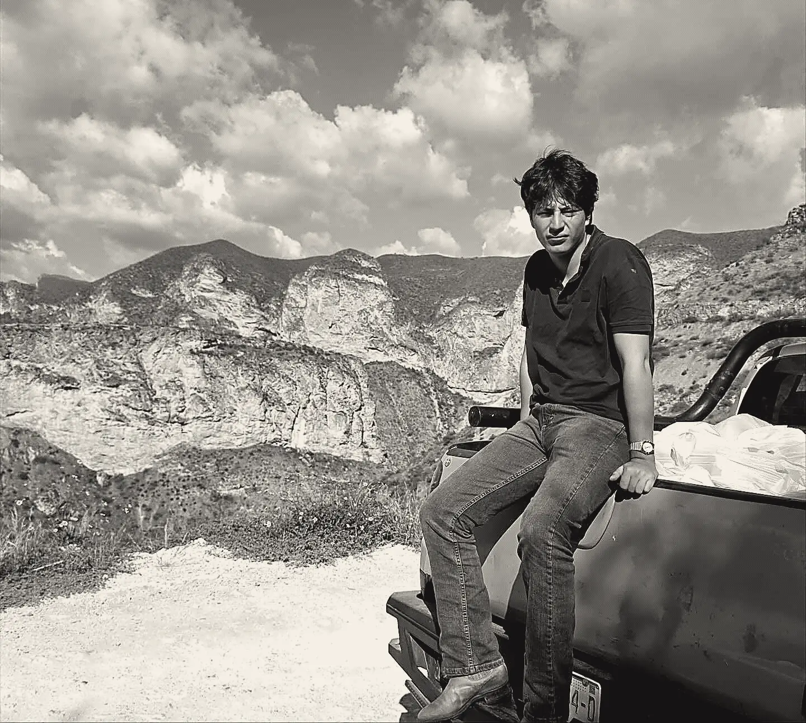
Mariano
Hortiguela.
@marianohortiguelaaguado Explico qué está pasando, de dónde viene y por qué importa.
Soy Mariano Hortiguela, analista político-económico y creador de contenido. Desde Querétaro, miro lo que pasa en México y el mundo. Fundé y edito ASAMBLEA: elijo los temas, defino el enfoque y superviso cada pieza.
En YouTube hago videos sobre temas públicos y económicos de México y el mundo. Combino contexto y datos con un lenguaje claro.
Ver mis análisis en YouTubeInteligencia artificial · México y el mundo
La IA se usa.
Y se explica.
Uso IA en el trabajo diario y también la explico: qué cambia, quién pone las reglas y cómo afecta a quien la usa.
La máquina ayuda en cada etapa; antes de publicar, decide una persona.
¿Insultas a la IA? Las nuevas reglas de Claude
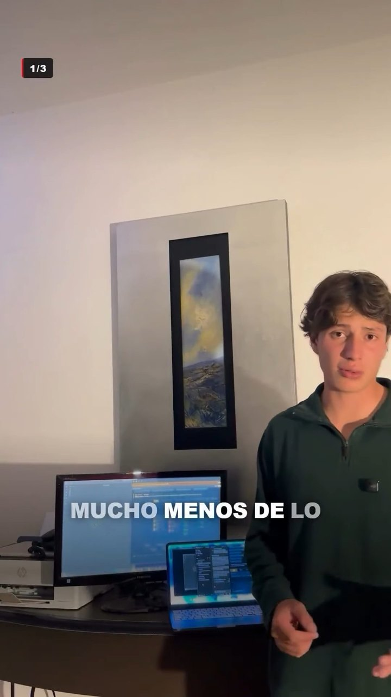
VER / 02Cómo uso la IA en mi día a día (1/3)
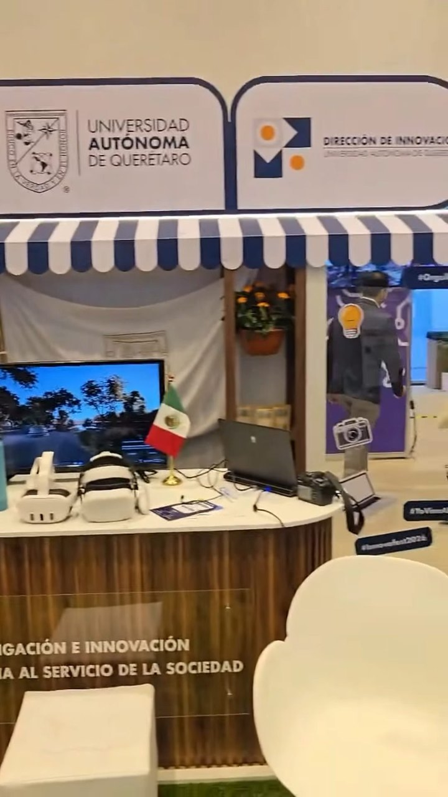
VER / 03InnovaFest Querétaro: recorrido (parte 1)
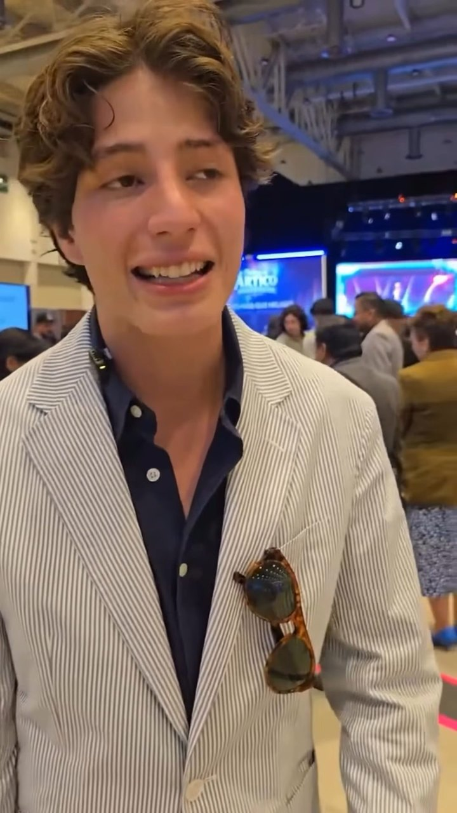
VER / 04InnovaFest: el taller de IA de NVIDIA (parte 2)
Nos vemos
en la mesa.
La actualidad en ASAMBLEA.
El análisis y el camino, con Mariano.